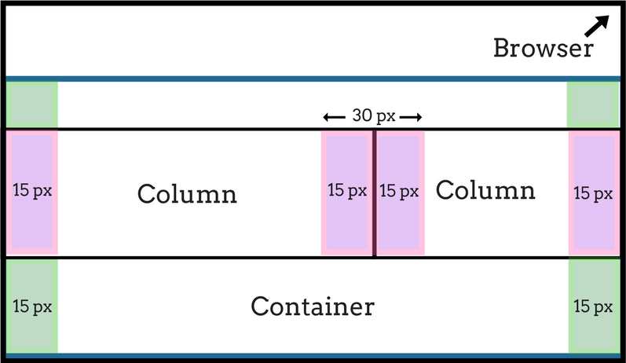

Grid System
Gutter Padding
Guidance
The standard gutter size on bootsrap 4 is 30px (15px left and 15px right).
Use bootsrap 'container' class to define the width of a contained site and container-fluid for the width of a full width site. This will give a margin left and right automatically.
Flexbox
Flexbox should be used to define the more intricate layout options.